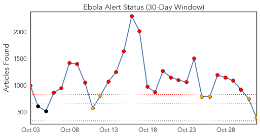
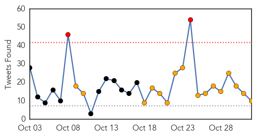
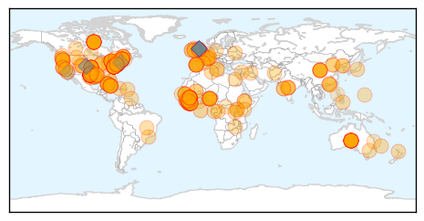
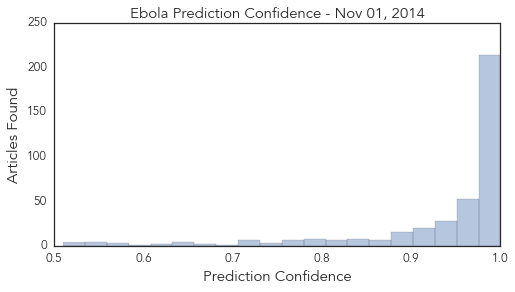

Toggle navigation
Early Warning
Daily Alerts
Ebola
Nov 01, 2014
Compare to:
-
Dengue Fever
Hemmorhagic Fever
Mold/Fungal Infection
Influenza
Meningitis
Pertussis / Whooping Cough
Middle East Respiratory Syndrome
Cholera
Hepatitis
Chikungunya
Yellow Fever
Bubonic Plague
West Nile Virus
Swine Flu
Measles
Unknown
Mumps
30 Day Trends
Web: 22
alerts
, 6
warnings
Twitter: 2
alerts
, 16
warnings
Top Articles:
Showing top 50 articles...
1.000
Canada restricts visas amid Ebola scare
1.000
U.S doctor with Ebola improves; nurse’s quarantined dog released
1.000
Obama Phones Ebola Fighters in West Africa
1.000
Ebola: UN envoy says response must be sustained 'until every last case is contained and treated'
1.000
U.S doctor with Ebola improves, nurse's quarantined dog released
1.000
Ebola: UN envoy says response must be sustained 'until every last case is contained and treated'
1.000
Ebolanoia: The Plague that's Sweeping America
1.000
US reaction to Ebola outweighs actual risk
1.000
NY doctor with Ebola improves, quarantined nurse reunited with her dog
1.000
Ebola crisis: US judge eases quarantine limits on nurse Kaci Hickox, who treated Sierra Leone patients
1.000
Ebola crisis: US judge eases quarantine limits on nurse Kaci Hickox, who treated Sierra Leone patients
1.000
American official: US in Ebola fight for long haul: Nation/World
1.000
AP IMPACT: US health care unprepared for Ebola: Here And Now
1.000
Ebola: UN envoy says response must be sustained 'until every last case is contained and treated'
1.000
Otago Daily Times Online News : Otago, South Island, New Zealand & International News
1.000
Ebola quarantine policy wrong
1.000
Ebola-hit Sierra Leone quarantines 31 health workers
1.000
Can You Really Get Ebola From Your Dog?
1.000
NYC Ebola patient improves; Oregon patient is 'low-risk' for virus
1.000
New York doctor with Ebola improves, hospital says
1.000
Woman being monitored for Ebola in Oregon hospitalized
1.000
Ebola: UN envoy says response must be sustained 'until every last case is contained and treated'
1.000
Ebola: UN envoy says response must be sustained 'until every last case is contained and treated'
1.000
New York Doctor With Ebola Improves
1.000
New York doctor with Ebola improves, hospital says
1.000
CDC results show Tulsa County patient does not have Ebola
1.000
Ebola: UN envoy says response must be sustained 'until every last case is contained and treated'
1.000
Ebola screening trickles down to doctors' offices, care clinics
1.000
Ghana, Business Advice, Jobs, News, Business Directory, Real Estate, Finance, Forms, Auto
1.000
Ebola: UN envoy says response must be sustained 'until every last case is contained and treated'
1.000
Ebola: UN envoy says response must be sustained 'until every last case is contained and treated'
1.000
Liberia opens one of the country’s largest Ebola treatment centers
1.000
Ebola outbreak: Get up to speed
1.000
Canada restricts visas amid Ebola scare
1.000
UN Says Response Must be Sustained Until Last Case is Contained
1.000
Local health officials say they're preparing for Ebola
1.000
Africans worst responders in Ebola crisis
1.000
Vermonter voluntarily quarantined after trip to West Africa
1.000
Canada imposes visa ban on Ebola-hit African countries — RT News
1.000
A look at latest Ebola developments
1.000
Ebola outbreaks in Nigeria, Senegal, appear contained: CDC reports
1.000
Ebola outbreak: Get up to speed
1.000
U.S doctor with Ebola improves, nurse's quarantined dog released
0.999
Amid Ebola scare, Canada restricts visas
0.999
WHO expects Ebola vaccines by 2015
0.999
Amid Ebola scare, Canada restricts visas
0.999
Canada to stop visas for West Africa - Emirates 24
0.999
Amid Ebola scare, Canada restricts visas
0.999
Nigeria Defeated Ebola Why Can’t The United States?
0.999
Canada restricts visas amid Ebola scare
Top Tweets:
0.841
Ebola outbreak: Ebola may not be a deadly disease for everyone scientists find | via
http://t.co/sHZFUX4L5Z
0.840
Morning all and hope you have a blessed day. Let's continue to pray for Africa especially Ebola West Africa Regions. 13000 affected so far!
0.831
2/2 ..above what WHO recommends. WHO recommended no travel restrictions for Ebola.
0.801
RT: Great news re: Spain an Ebola. Highlighting that with caution the virus does not spread &cause disease easily
0.762
Short of medical facilities are affecting other health issues. God help our continent especially affected Ebola affected regions.
0.708
RT: largest conf on Ebola and similar diseases starts today; doctors/researchers working in Ebola zone barred from attending by h…
0.644
RT: Another ALSicebucketchallenge? End Ebola Now has created ShakeEbolaOff to boost financial support for Ebola... http:…
0.591
Sierra Leone. Clinical Illness and Outcomes in Patients with Ebola in Sierra Leone ebolaresponse
http://t.co/nsCzzgAWpI
0.589
BBC News - Ebola outbreak: Sierra Leone escaped patient dies
http://t.co/GAu4HT7RoT
0.548
Let pray for the world at large and other health issues affecting people around the world especially ebola affected regions.
Web/News Articles

Tweets

Article Locations

Article Confidences
